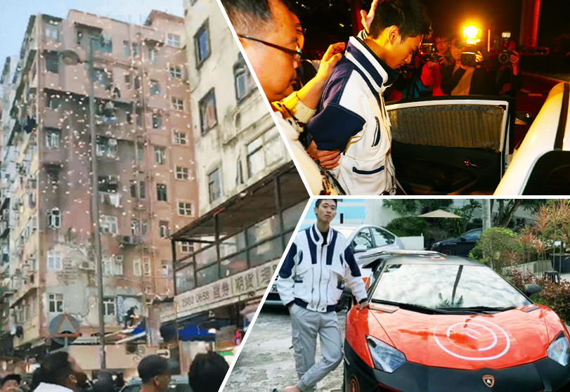
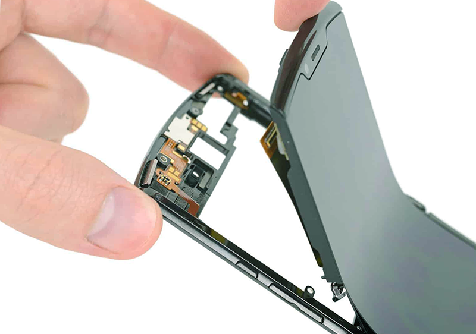

拆解 機內多柔性電線 外媒列史上最難修理手機

Author
Feb 16 • 3 min read
真正呈現過往摺機風格的 推出後，有外媒馬上對這部話題主機進行拆解，發現它探用了大量柔性電線，零件散落在主機上下不同位置，好多都用膠水黏貼，如果手機壞掉的話，維修將會非常麻煩。
摺疊式手機 RAZR 2019 經由外媒 進行拆解，他們把手機的可修理評分列為 1 分（10分為滿分），基本上一般人是不可能自行維修主機。 指出他們拆解史上最複雜的手機，內部用上大量柔性線材，加上好多零件都用膠水貼合，拉扯時不能太用力，拆解步驟也不能錯誤，否則一下就會扯斷電線或損壞零件。以電池來說，就分別有兩塊各自散佈在主機的上半與下半位置，且直接用膠水黏貼在 pOLED 面板後面，非常難以取出。
另一方面他們在開蓋時也發現，畫面中央邊緣位置在摺合時，有非常短時間會留有細小縫隙。雖然縫隙出現的時間十分短，但仍有機會令塵埃等飛進轉軸或熒幕。
在拆解時他們也留意到在熒幕表面用來防刮、防水的納米塗層非常脆弱，極容易在拆解熒幕時弄壞。
不過 也為 辯護，指摺疊式架構十分複雜，沒有空間可考慮維修是否簡易的問題。當然用戶很少會自己拆解手機，壞機拿去原廠保養便可，不過似乎在短期間內，就較難會在坊間找到師傅修理了。
Categories: Lifestyle, Opinion Tags: #rain, #interview